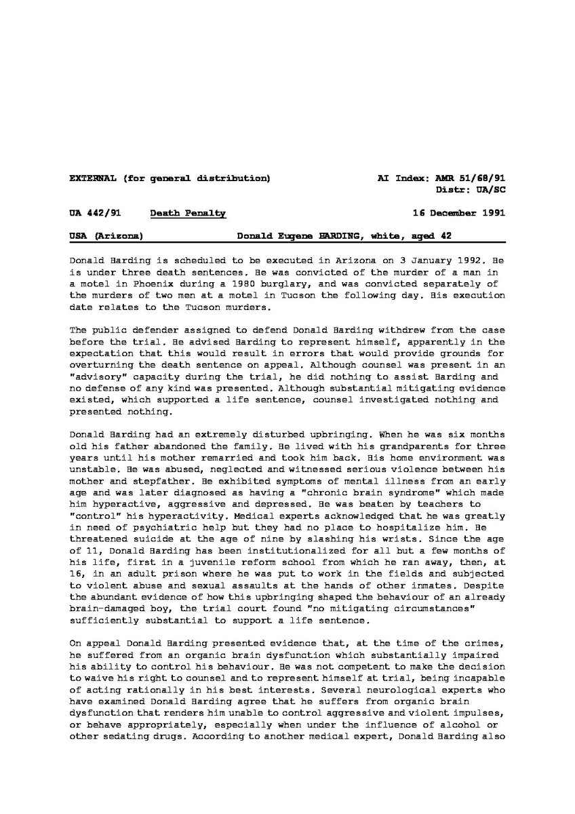

麦片
@maipianaini0930
关于哈丁被执行死刑的后续报道称典狱长威胁如果被要求执行另一次毒气室死刑，他将辞职。《纽约时报》和《新闻周刊》声称，司法部长伍兹看到哈丁抽搐的画面后感到恶心呕吐。
羁押期间，哈丁袭击了一名狱友，哈丁在审判期间被要求佩戴脚镣。后他试图刺伤一名狱警，但被另一名狱警阻止

麦片
@maipianaini0930
大约凌晨 12 点 05 分，哈丁被带入毒气室。司法部长伍兹声称，哈丁随后看着他，并开始隔着玻璃大声辱骂。记者称，在毒气扩散到毒气室的过程中，哈丁还向司法部长伍兹竖起了中指，做出了猥亵的手势。氢氰酸气体释放到毒气室后10分31秒，哈丁被宣布死亡 https://t.co/qWUHrXQnMn